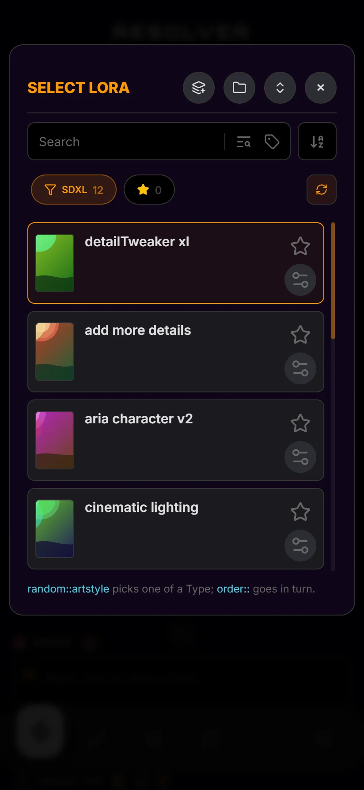
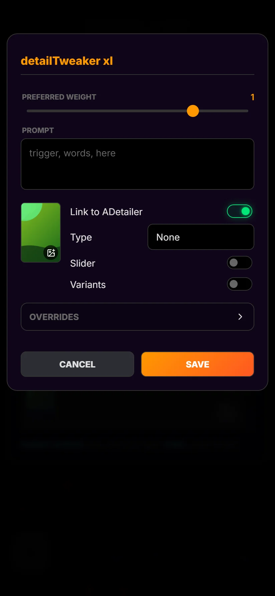
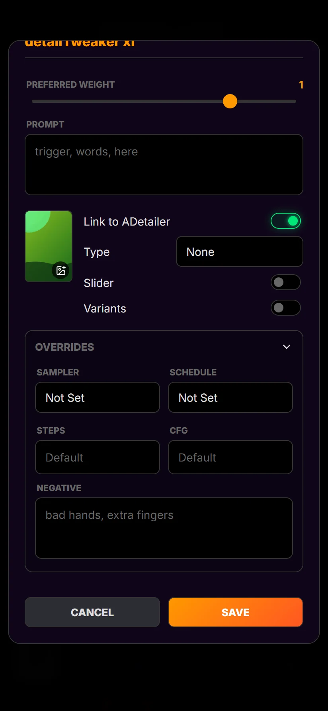
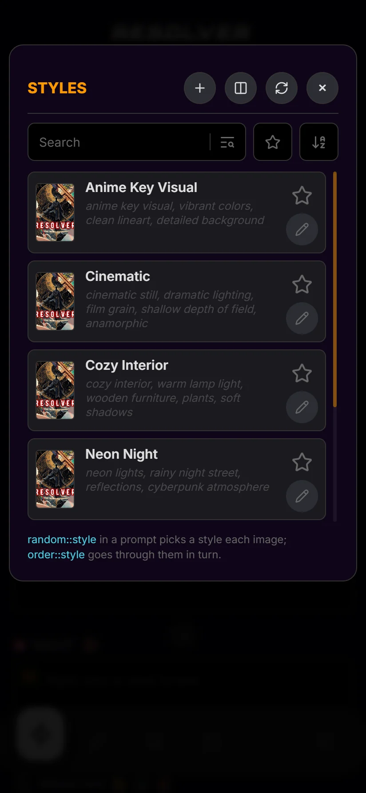
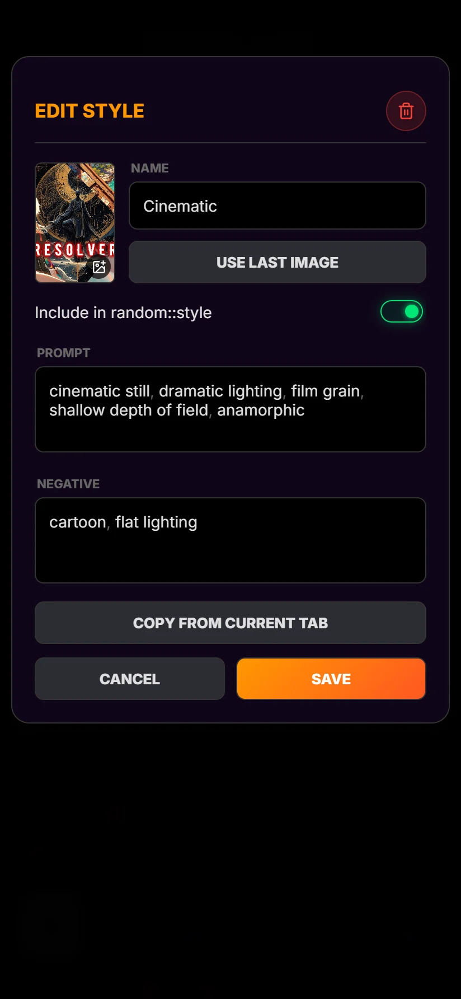

Docs / Create
LoRAs & Styles
LoRAs are small add-on files that teach a model a character, an outfit or a look. Styles are prompt snippets you save once and tap in whenever you want them. Both live one tap below the prompt box.
The LoRA window
Tap + LORA under the prompt. Every LoRA on your PC is listed with its thumbnail. Tap a number to see what each part does:

- New groupPuts several LoRAs under one header; only one of them is in the prompt at a time. Groups.
- Manage foldersYour LoRA folders on the PC. Tap a heart to add a folder to the filter bar.
- Open allOpens or closes every group and variant list at once.
- SearchFinds LoRAs by name. Searches go by whole words, in any order.
- Search prompts and variants tooAlso matches a LoRA’s trigger words, negatives, variants, slider names and file names.
- Search by typeShows only one Type: Artstyle, Background, Character, Character pack, Clothing, Concept or Other.
- SortA–Z, Recently added, Recently used or Most used. The window remembers your choice.
- Model filterShows the LoRAs for this tab’s model (here SDXL, 12 of them). Folders you’ve hearted appear as more chips; swipe sideways to move between them.
- FavoritesOnly your starred LoRAs.
- RefreshReloads the list from Forge after you’ve added LoRA files on the PC.
- A LoRATap to add it to the prompt; tap again to take it out. One already in the prompt has an accent border (like this one).
- StarMarks it as a favorite.
- SettingsThis LoRA’s weight, trigger words, Type, slider, variants and overrides. Below.
- random:: / order::A reminder: type
random::artstylein a prompt to pick one LoRA of that Type for each image. Types.
Adding and removing
- Tap a LoRA to add its tag,
<lora:name:weight>, to the prompt at its preferred weight, together with its trigger words (and its negatives in the Negative box). - Tap it again (or delete its tag) to take it out: its trigger words and negatives go too, unless another LoRA, style or your default prompt also uses them.
- LoRAs you paste or bring in from Analyze work the same way, and a tag in different capitals is still recognised.
How the tag works
The number in the tag is the weight: how strongly the LoRA applies. Try it:
A LoRA’s settings
Tap the button on a LoRA. Changes apply the next time you add it.
- Preferred Weight
- The weight it’s added at.
- Prompt
- Its trigger words, added with it. Each LoRA’s page on Civitai usually lists them.
- Thumbnail
- Tap the picture to choose your own, or use your last generated image.
- Link to ADetailer
- On by default: when an ADetailer pass has LoRA link on, this LoRA’s tag is also used for that pass (the tag only, not its trigger words).
- Type
- Artstyle, Background, Character, Character pack, Clothing, Concept or Other. Used by the type filter and by
random::. More.
- Slider
- Shows a weight slider under the prompt while this LoRA is in it. More.
- Variants
- Turns on alternative versions of this LoRA. More.
- OverridesSampler · Schedule · Steps · CFG · Negative
- Settings this LoRA needs, put in when you add it: e.g. a Lightning LoRA’s 6 steps and CFG 1.5. They win over the checkpoint’s defaults; with several LoRAs, the last one added wins. Negative: tags added to the Negative box with it.


Types and random picks
Giving LoRAs a Type lets the app choose among them for you. In a prompt:
random::artstyle- Picks one Artstyle LoRA at random, for each image.
order::character- Goes through your Character LoRAs one after another, image by image.
The same works for every Type (background, clothing, concept…). A Character pack (one LoRA holding many characters as variants) counts as characters, each variant its own.
Weight sliders
For a LoRA with Slider on, a slider appears under the prompt box while its tag is there. Drag it and the number in the tag follows; edit the tag and the slider follows.
With Forge Couple, Config → Extensions → Show Forge Couple → Sliders for all LoRAs gives every LoRA in the prompt a slider while Forge Couple is on for that tab, handy for balancing LoRAs between regions.
Variants
Alternative versions of one LoRA: an outfit, a hairstyle, a pose. Each variant has its own name, weight, prompt (trigger words), additional negative prompts and thumbnail (choose a file or use the last image). They appear under the LoRA’s row; tap one to use that version.
Groups
Tap New group to put LoRAs under one header, for example several characters from one series. Only one LoRA of a group is in the prompt at a time (sliders excepted). A group has its own name, thumbnail and Type shared by its LoRAs, ADD LORAS to fill it, Hide Parents to hide the LoRAs from the main list, and Ungroup.
Folders and favorites
- Folders: the folders your LoRAs are in on the PC. Open Manage folders and tap a heart to pin a folder to the filter bar.
- Favorites: the star on a row; the star chip shows only those.
Styles
A style is a saved bit of prompt (and negative), like “Cinematic” or “Watercolor”. Tap STYLES under the prompt, then tap a style to add it; tap it again to take it out.
- A style whose text is all in the boxes shows as applied; one only partly there is outlined with dashes.
- Styles work on img2img too (LoRA · STYLES · PRESETS).
random::stylein a prompt picks a style for each image;order::stylegoes through them in turn.style::NAMEadds one style for that image only.
- New style
- Opens the editor for a new one.
- Fetch from server
- Brings in the styles saved in Forge.
- Forge Couple styles
- When Forge Couple is on: shows only styles that hold a region layout.
- Search · ★ · Sort
- Search by name (or prompts too, with the button in the box), show favorites, and sort as in the LoRA window.

Making and editing a style
Tap for a new style, or a style’s pencil to edit it.
- Thumbnail
- Tap the picture to choose one, or USE LAST IMAGE.
- Name
- Must be unique; a name already in use is refused.
- Include in random::style
- Off:
random::styleandorder::styleskip this one.
- Prompt · Negative
- The text it adds to each box.
- COPY FROM CURRENT TAB
- Fills the style from what’s in the tab’s boxes right now.
- Layout Forge Couple
- With Forge Couple on, a style can also save regions: BASIC or ADVANCED, direction, background and each region’s text. See Forge Couple.
- Delete
- Removes the style.

Styles, LoRA settings, variants and groups live on your phone. Config → System Settings → BACK UP saves them all to a file.